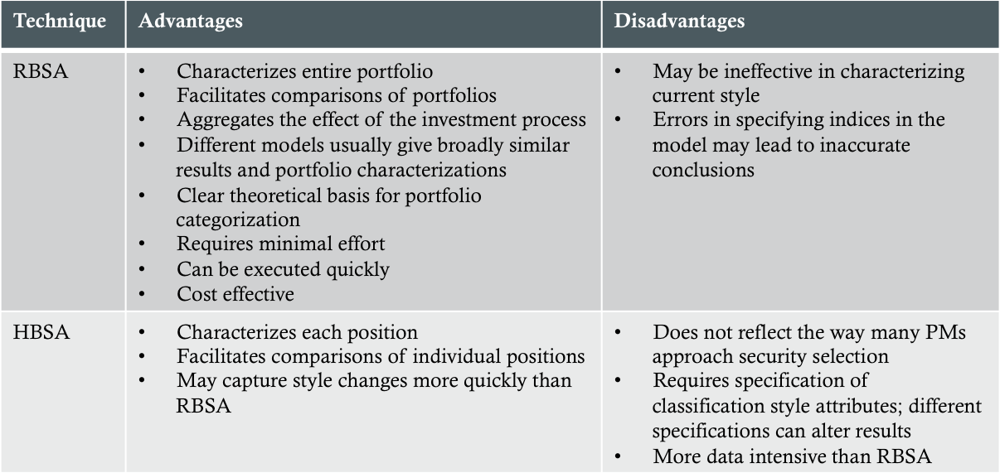

Reading 27
Equity Portfolio Management
Created for AlchemistsAcademy by MacLane Wilkison
Role of the Equity Portfolio
- Inflation hedge - nominal returns tend to be highly correlated with inflation rate
- Growth - high historical long-term real rates of return
Approaches to Equity Investment
- Passive management
- Indexing
- Active management
- Semiactive management
- Active return
- Active/tracking risk
- Information ratio
Passive Equity Investing
Equity Indices
- Weighting types:
- Price weighted - each stock in the index is weighted according to its absolute share price
- Represents the performance of a portfolio that simply bought and held one share of each index component
- Value weighted - each stock in the index is weighted according to its market cap
- Represents the performance of a portfolio that owns all the outstanding shares of each index component
- Equal weighted - each stock in the index in weighted equally
- Represents the performance of a portfolio in which the same amount of money is invested in the shares of each index component
Passive Investment Vehicles
- Indexed portfolios
- Conventional index mutual funds
- Exchange-traded funds (ETFs)
- Separate/pooled accounts
- Long cash + long equity index future
- Long cash + long equity total return swaps
Mutual Funds vs. ETFs
- Shareholder accounting at the fund level can be a significant expense for conventional mutual funds; ETFs do not have fund level shareholder accounting
- ETFs generally pay much higher index license fees than conventional funds
- ETFs are often much more tax-efficient than conventional funds
- Users of ETFs pay transaction costs including commissions to trade them; However, for ongoing shareholders, ETFs provide inherently better protection from the cost of providing liquidity to shareholders who are selling fund shares
Indexed Portfolios
- Full replication - every issue in the index is represented in the portfolio and will have approximately the same weight in the fund as in the index
- Stratified sampling - investor divides index along several dimensions, creating multidimensional cells, in which each index stock is categorized; A random sample of stocks is selected from each cell to compose the portfolio
Active Equity Investing
Investment Styles
- Value - attempts to identify stocks that are relatively cheap in terms of the purchase price of earnings or assets
- Low P/E
- Contrarian
- High yield
- Growth - attempts to identify stocks that have superior growth prospects
- Consistent growth
- Earnings momentum
Identifying Investment Styles
- Returns-based style analysis (RBSA) - focuses on overall portfolio characteristics by regressing portfolio returns on return series of a set of securities indices that are:
- Mutually exlusive
- Exhaustive with respect to the relevant investment universe
- Distince sources of risk
- Holdings-based style analysis (HBSA) - categorizes individual securities by characteristics and aggregates the results to determine overall portfolio style
Identifying Investment Styles (cont'd)
Illustrative Style Box
Definition: Visual way of quickly and easily categorizing investment styles

Style Drift
Definition: The phenomenon wherein an investment manager strays from his stated style to the style current in favor
Socially Responsible Investing (SRI)
Definition: Integrates ethical values and societal concerns with investment decisions
- May constraints based on:
- Industry classification, reflecting concern for sources of revenue judged to be ethically questionable
- Corporate priactices
Semiactive Investing
- Fundamental Law of Active Management - states that lower-breadth strategies necessarily require more accurate insight about a given investment to produce the same information ratio as a higher-breadth strategy
- Information ratio (IR) ≈ Information coefficient (IC) × √(Breadth)
Managing a Portfolio of Managers
- Goal is to maximize: UA = rA - λAσ2A
- Core-sattelite portfolio - a portfolio in which indexed and semiactive managers constitute a core holding, while active managers represent a ring of sattelites
- Completeness fund - a fund that, when added to active managers' positions, establishes an overall portfolio with approximately the same risk exposures as the overall equity benchmark